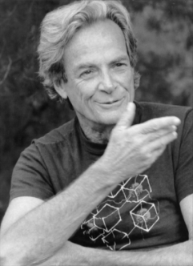

«Узнайте, как устроен остальной мир. Разнообразие – стоящая вещь». Ричард Ф.Фейнман
Рецензия
Об авторе
Другие работы
Тест
Интерактивный тест

На каком музыкальном инструменте играл Ричард Фейнман?
Гитара
Бонго
Труба
Скрипка
Ремонтом каких приборов был увлечен Фейнман в детстве?
Телефонов
Телевизоров
Радиоприемников
Печатных машинок
Какие из перечисленных ниже учебных заведений упоминаются в книге?
Массачусетский технологический институт
Корнелльский университет
Принстонский университет
Университет Глазго
Калифорнийский технологический институт
Какое двухзначное число назвал Ричард Фейнман в ответе на вопрос психиатра «Насколько вы цените жизнь?»: